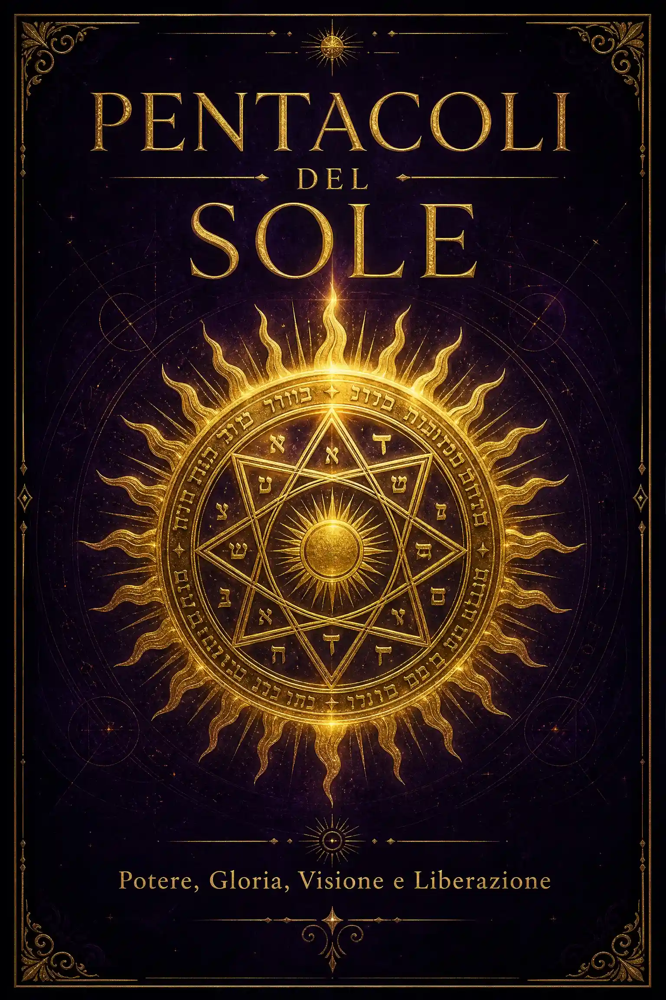
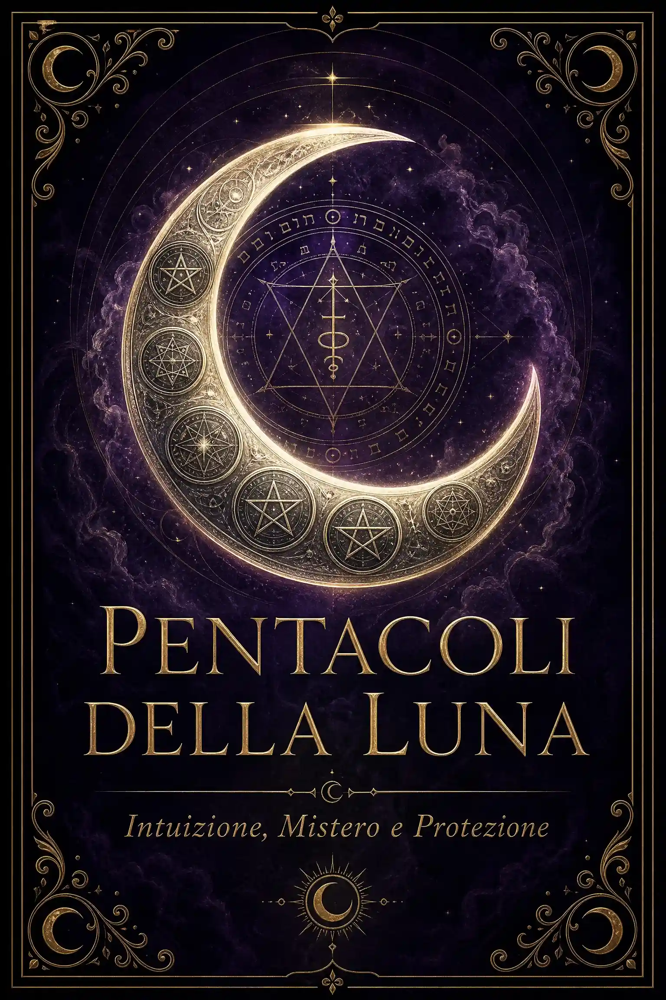
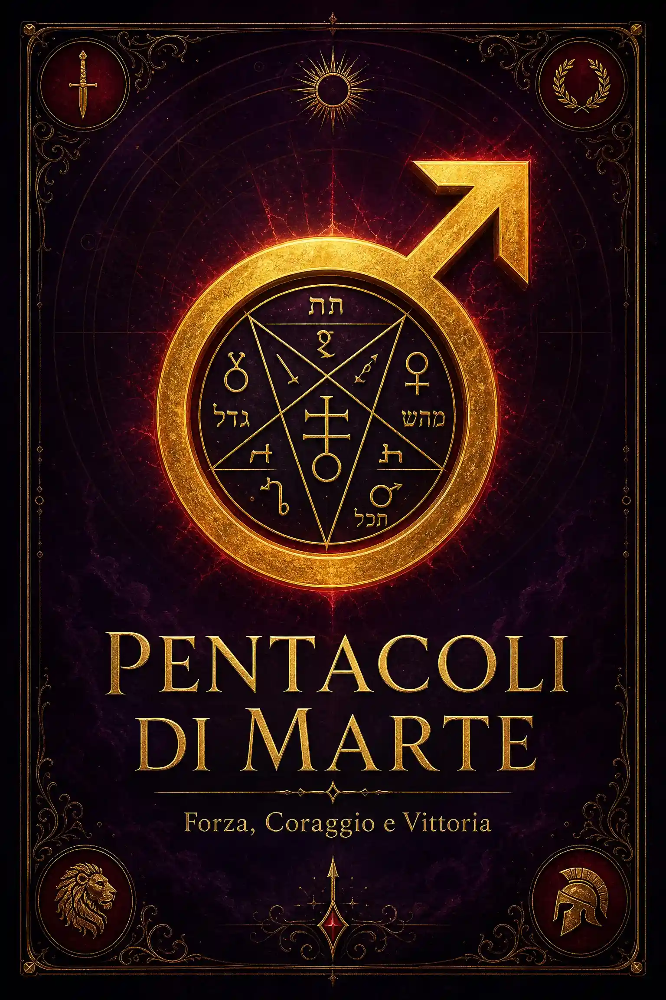
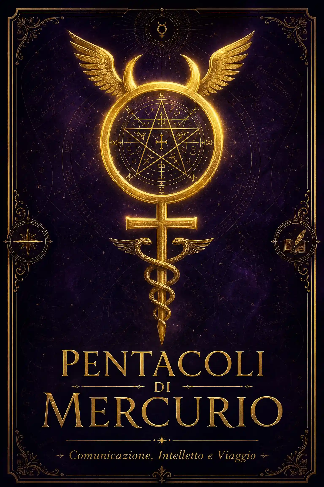
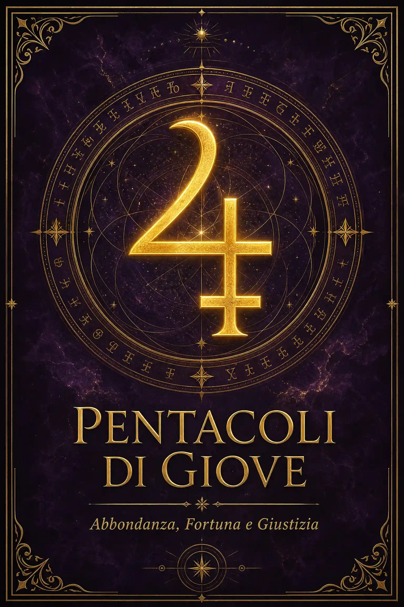
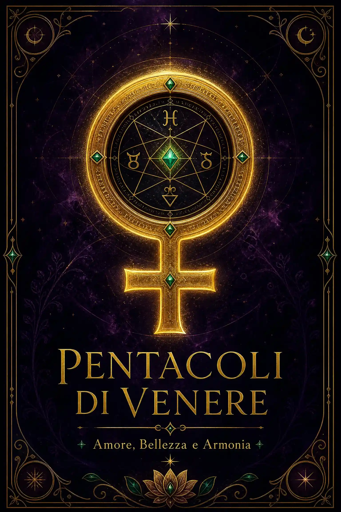
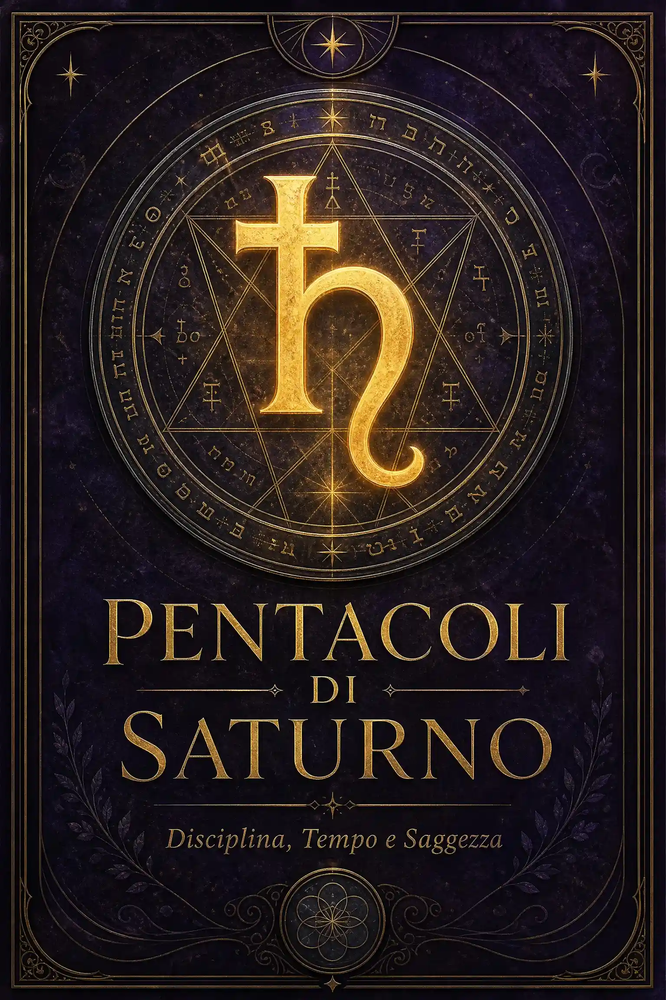

✦ I 44 Pentacoli
IT
EN
ES
✦ Scegli il tuo Pianeta ✦

☉
Sole
7 sigilli

☽
Luna
6 sigilli

♂
Marte
7 sigilli

☿
Mercurio
5 sigilli

♃
Giove
6 sigilli

♀
Venere
5 sigilli

♄
Saturno
7 sigilli
📤 Condividi
💬 WhatsApp
✈️ Telegram
👥 Facebook
🐦 X
✦ Cabalà
✦ Sigilli di Salomone
✦ Astrologia Avanzata
✦ Magia Bianca
FAQ